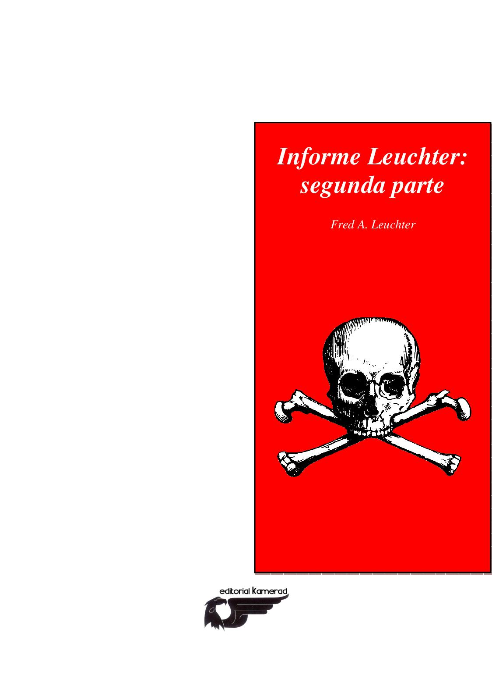

Mi Lucha Adolf Hitler

Adolf Hitler-Discursos 1920-1945

El Programa del NSDAP y sus concepciones doctrinarias

Los Protocolos De Los Sabios De Sión

Mi Despertar Politico Anton Drexler

El Segundo Informe Leuchter

El Judaismo en la musica

Los Judios y sus mentiras

Los protocolos de los sabios de sion

Conocimiento racial del pueblo alemán.

El Hongo Venenoso.
_0000.jpg)
1935 Fascismo En España

Dieter Schwarz - La Francmasonería

Ramiro Ledesma-Discurso a las juventudes de España